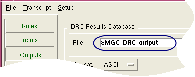

The examples and the view shown in Figure 1 in the section “Set Environment Variables Dialog Box” use the following setup:
Rule File
The rule file includes the following statements referencing the environment variable DRC_process:
#ifdef $DRC_process 7b
LAYER top_m metal1
#else
#ifdef $DRC_process 8a
LAYER top_m metal3
#else
LAYER top_m metal2
#endif
#endifShell Environment
The shell environment variables DRC_process and MGC_DRC_output are defined in the shell as follows (using csh):
% setenv DRC_process 7b
% setenv MGC_DRC_output lab2_results
GUI Setup
|
In the Calibre Interactive nmDRC GUI, the DRC Results Database File on the Outputs pane is defined as $MGC_DRC_output. |
 |
A previous Calibre Interactive run defined the runset environment variable testnum and assigned it a runset value of 2, as seen in Figure 1. The process for doing this is given in, “Adding a Runset Environment Variable Example”.